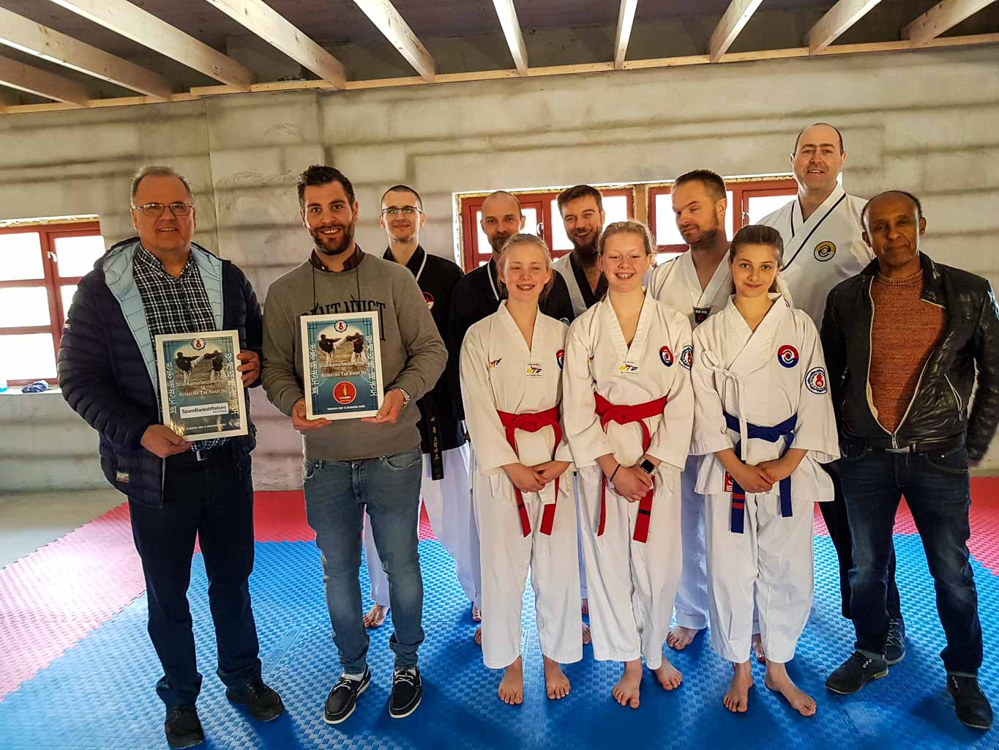
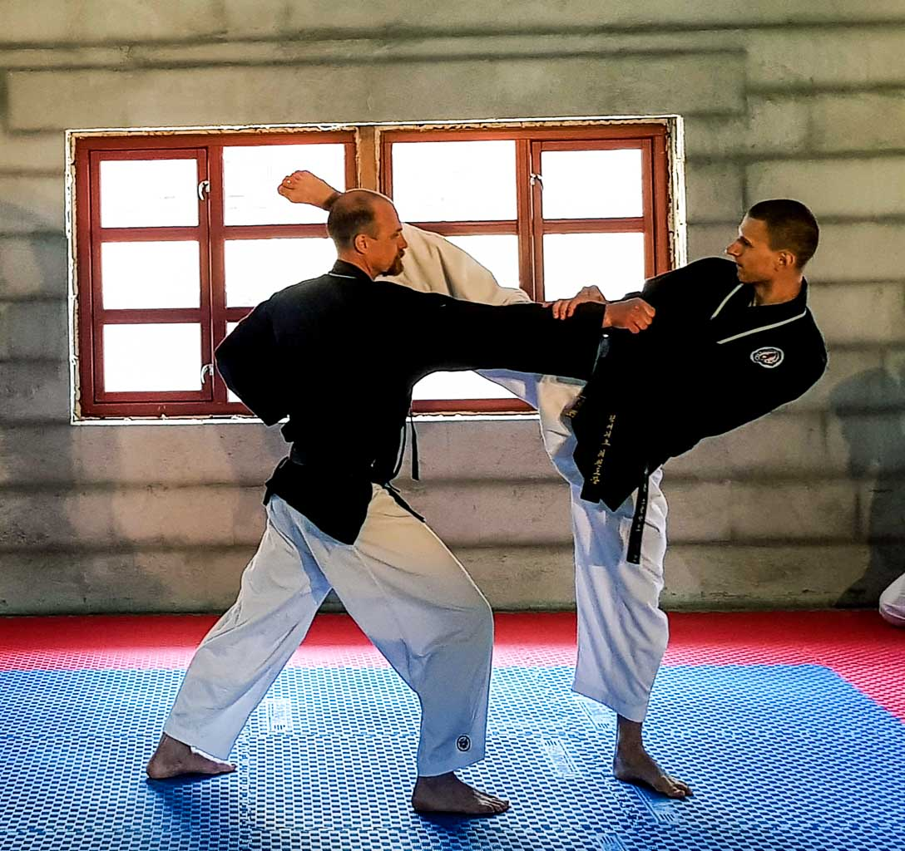
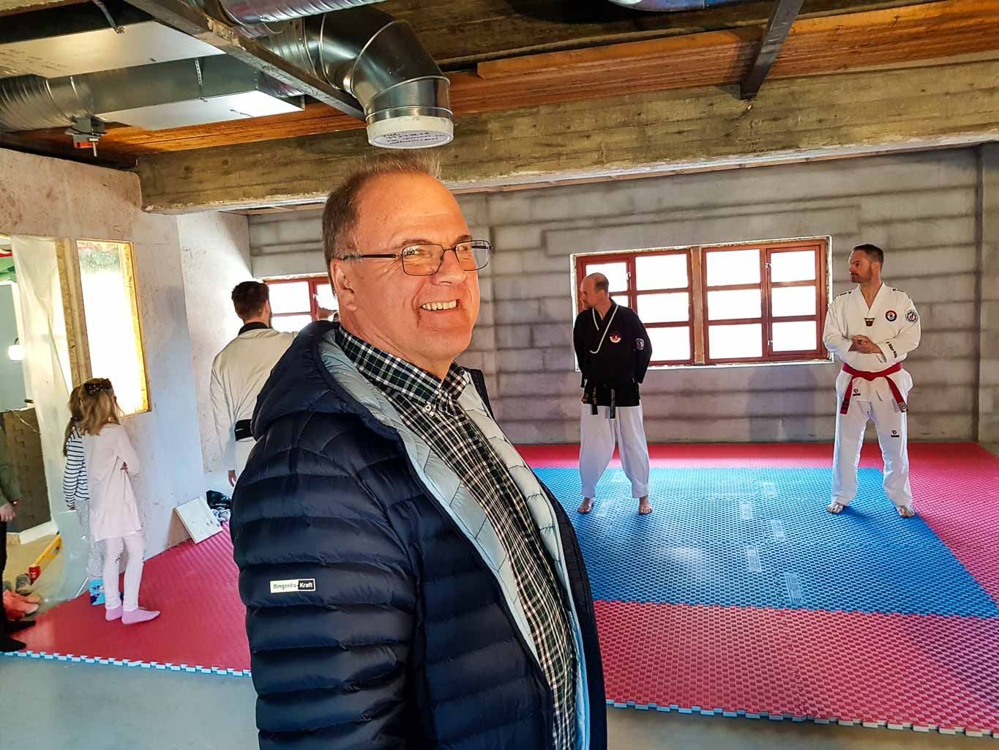

Innlegg
Sponsortreff med slag og spark

Lørdag 28. april arrangerte Ringerike Taekwondo klubb et sponsortreff for sine sponsorer. Dessverre kunne ikke alle komme. For de fremmøtte ble det holdt en kort presentasjon om fremdriften på den nye treningshallen midt under bybrua i Hønefoss, som skal være innflyttingsklar sommeren 2019.
Til slutt fikk de fremmøtte se et forrykende kampsportshow med plateknusing, mønster-, slag- og sparkkombinasjoner.
Imponert over alle dugnadstimer
Den største sponsoren Sparebankstiftelsen Ringerike med daglig leder Runar Krokvik er meget imponert over alle dugnadstimer som klubbens medlemmer har nedlagt i det nye anlegget. – Når vi fikk søknad fra klubben om økonomisk støtte til utbygging av anlegget første gang i 2016 på 300 000 kroner plusset vi på med 50 000 kroner. Når vi fikk en ny søknad i fjor på 200 000 kroner plusset vi på med 100 000 kroner fordi vi så med en gang at behovet for økonomiske midler var vesentlig høyere.

Instruktørene Reinhardt G. Skøien og Artsiom Stalmakov viser frem sine ferdigheter på matta. Ideell Stiftelse Sparebankstiftelsen Ringerike er en ideell stiftelsen som i flere år har gitt støtte til allmenn nyttige formål innen sport og kultur i Hønefoss. – Dette er en støtte som vi ikke krever tilbakebetalt. Meg bekjent er det første gangen vi har bevilget mer penger enn det søkeren har bedt om. For Ringerike Taekwondo klubb utgjør det en støtte på til sammen 650 000 kroner, sier Krokvik. Han mener dette er godt anvendte penger til å fremme kampsport til ungdom i Hønefoss.
Meg bekjent er det første gangen vi har bevilget mer penger enn det søkeren har bedt om, sier daglig leder Runar Krokvik Sparebankstiftelsen Ringerike, som er den største sponsoren til Ringerike Taekwondo klubb. Evig takknemlig Master og daglig leder Geir Karlsen i Ringerike Taekwondoklubb er evig takknemlig for all støtte fra sine sponsorer. – Uten deres hjelp hadde vi ikke vært der vi er i dag. Dere er med på å realisere drømmen vår om å få vårt eget treningssenter på over 300 kvm. Det er noe alle klubbens medlemmer gleder seg til å ta i bruk, understreker han. Omflakkende liv Ringerike Taekwondo klubb ble stiftet i 1981 og har levd et omflakkende liv på forskjellige utleieplasser i Hønefoss. Noen leietakerne skodde seg økonomisk på oss slik at vi hele tiden har vært på jakt etter lokaler tilpasset vår lommebok. Frem til vi åpner vårt nye treningssenter med alle fasiliteter, vil all trening skje i Ringerikshallen, sier instruktør Reinhardt G. Skøien. Han kan fortelle at klubben i dag har til sammen 143 medlemmer der økningen er størst blant voksne tett etterfulgt av ungdom og barn. En del av klubbens medlemmer, instruktører og daglig leder sammen med fra venstre sponsorene Sparebankstiftelsen Ringerike med daglig leder Runar Krokvik, Veme Bensin og Service med Anders Bråthen og Hønefoss Vaktselskap ytterst til høyre med Yebio Fecadu. Iver E Skøien fra 2.Brødre var tilstede, men kom dessverre ikke med på bildet Styrker idrettslige ferdigheter Sponsortreffet ble avsluttet med et forrykende kampsportshow med mønster, slag spark og taklinger. – Dette er en del av pensumet våre elever blir drillet i på våre ukentlige treninger. Kampsport, slik det praktiseres i klubben, er med på å styrke idrettslige ferdigheter hos både voksne og barn. – Vi fremmer disiplin, respekt og toleranse for hverandre. Dette er egenskaper som kommer godt med både på skole og fritid, avslutter Karlsen og Skøien Artikkel av Trond Schieldrop (Medlem Ringerike TKD klubb)